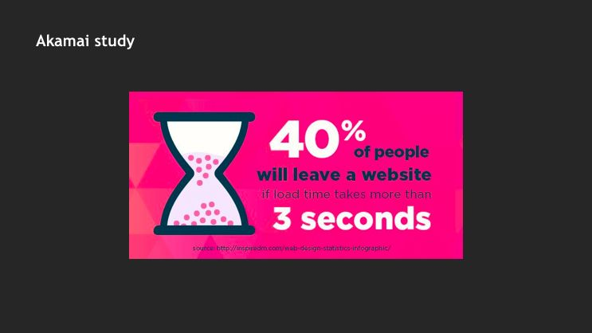
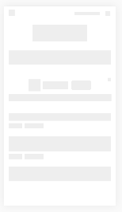
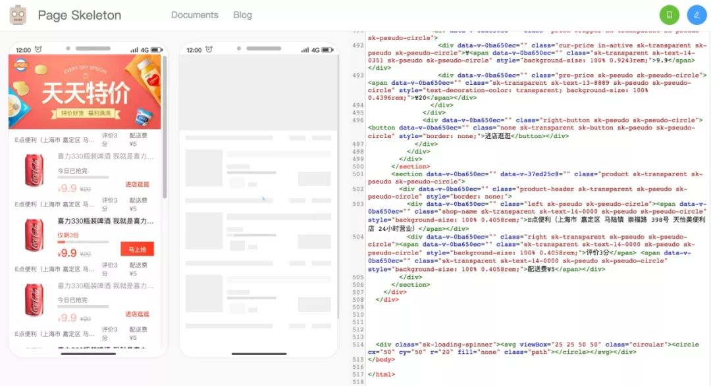
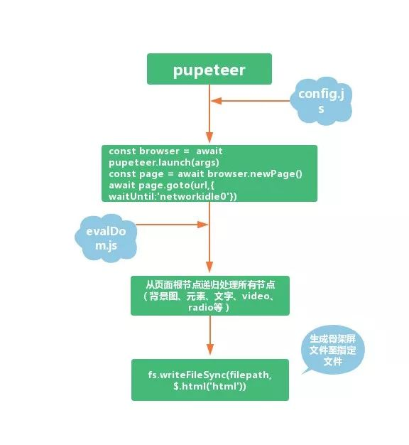
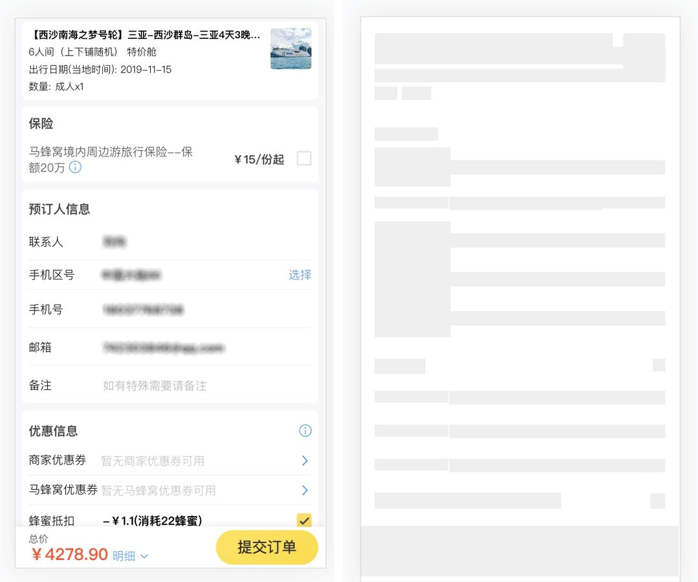

原文连接:https://www.cnblogs.com/mfwtech/p/11474796.html
（马蜂窝技术原创内容，公众号 ID：mfwtech）
一份来自 Akamai 的研究报告显示，在对 1048 名网购户进行采访后发现：
-
约 47% 的用户期望他们的页面在两秒之内加载完成。
-
如果页面加载时间超过 3s，约 40% 的用户会选择离开或关闭页面。

一直以来，为了提升用户在页面加载时的体验，无论是 Web 还是 iOS、Android 的应用中，前端开发工程师都做了许多工作。除了解决如何让网页展现速度更快的问题，还有很重要的一点就是提升用户对加载等待时间的感知。「菊花图」以及由其衍生出的各种加载动画就是一类常见的解决方案，相信无论是开发者还是用户对下面这个图标都不会陌生：
本文要介绍的「骨架屏」则被视为菊花图升级版的方案。受现有骨架屏方案的启发，马蜂窝电商前端研发团队实现了一种自动化生成骨架屏的方法，并在马蜂窝商城的多个页面中实现应用，取得了不错的效果。
一、什么是骨架屏
骨架屏可以理解为在页面数据尚未返回或页面未完成完全渲染前，先给用户呈现一个由灰白块组成的当前页面大致结构，让用户产生页面正在逐渐渲染的感受，从而使加载过程从视觉上变得流畅。生成后的骨架屏页面如下图所示：

骨架屏的主要优势为：
- 用户避免看到长时间的白页
- 可以获知页面的大体结构，减小用户认为页面出错而离开的机率
- 与菊花图相比视觉更加流畅
二、常见的前端骨架屏方案
在选择骨架屏之前，我们也考虑了一些其他的方法，比如能否通过服务端渲染（SSR）的方式来避开前端白屏时间的问题。但发现需要涉及项目过多，还会涉及服务的构建与部署；或是通过 prerender-spa-plugin 提供简单的预呈现，它对 SPA 支持友好，但需要额外的 webpack 配置，且因为包源的问题，下载时间过长，有时还会莫名失败，等等，都因为种种原因最终放弃。
经过一系列调研后，我们对业界常见的几种骨架屏解决方案，以及它们的优势、不足进行了一个简单的梳理。
1. UI 骨架屏图
即通过 UI 提供符合页面首页样式的图来充当骨架屏，将骨架屏 base64 图片插入 root 根节点，在 webpack 打包时嵌入项目中。
这是一种简单粗暴的方法，实现起来比较容易。但缺点也很明显，就是需要 UI 设计师支持和开发介入，不能自动生成。
2. 手写骨架屏
即通过手写 HTML、CSS 的方式为目标页定制骨架屏。这种方式可以做到对页面真实样式的复刻。不过一旦由于各种原因导致页面样式发生改变，就需要再改一遍骨架屏的样式和布局，极大增加了维护的成本。
3. 自动生成静态骨架屏
目前比较受关注的是饿了么开源的插件 page-skeleton-webpack-plugin，其具体实现原理为：
- 生成骨架屏
通过 Puppeteer 操控 handless Chrome 打开需要生成的骨架屏页面，在等待页面加载完成之后，保留页面布局样式的前提下，通过对页面中元素进行增删，对已有元素通过层叠样式进行覆盖，使其展示为灰白块。然后将修改后的 HTML 和 CSS 提取出来，将页面分为不同的块区域，例如文本块、图片块、按钮块、SVG、伪类元素块等，分别对每个块进行处理，使其尽量与原页面保持一致。这里用到了 Puppeteer page 实例的 addScriptTag 方法来将处理块的脚本插入到 headless Chrome 打开的页面当中。
实际生成的骨架屏页面与原页面可能还会存在差距，插件通过 memory-fs 将骨架屏写入内存中，可以通过预览页面对生成的骨架屏进行二次编辑和效果预览，修改完成后点击生成按钮就能生成一份新的骨架屏写入到项目中。
借一张图来说明：

- 插入骨架屏
骨架屏的 DOM 结构和 CSS 通过离线生成后，在构建时注入模板 (EJS) 中的节点下面，插入到 HTML 是在 after-emit 钩子函数中进行。
page-skeleton-webpack-plguin 生成骨架屏的方案可以根据项目中不同的路由页面生成相应的骨架屏页面，并将骨架屏页面通过 webpack 打包到对应的静态路由页面中。
它的不足之处在于：
-
实际使用过程中无法监听接口返回导致生成骨架屏的时机是否准确
-
生成的页面与业务人员写的结构质量有直接关系，经常出现需要手工二次调整的情况
在这样的背景下，马蜂窝电商研发前端团队希望找一种在提升用户体验的同时，对开发更友好的骨架屏生成方式，能针对不同的业务场景自动生成出相似的骨架屏，并且实现自动注入。对于开发而言，只需要执行一条命令，或者简单配置，就可以生成骨架屏，不需要再考虑后续的维护工作。
在方案调研过程中，draw-page-structure 为我们的设计提供了灵感。
4. draw-page-structure
- 生成骨架屏：
// dps.config.js
{
url: 'https://baidu.com',
output: {
filepath: '/Users/famanoder/DrawPageStructure/example/index.html',
injectSelector: '#app'
},
background: '#eee',
animation: 'opacity 1s linear infinite;',
// ...
}
根据 URL 指定的线上地址，配合 Puppeteer 获取当前页面的 DOM 结构，并对其中元素节点生成骨架屏文件到 filepath 指定的文件里面，就可以生成骨架屏页面，结果如下图所示：
-
插入骨架屏
将上述生成的骨架屏文件插入到页面根节点下面一般为 id="app" 的节点，然后在通用工具里提供主动销毁骨架屏的方法，就可以帮助开发主动控制或销毁骨架屏，显示页面真实内容。
draw-page-structure 的设计思想很大程度上可以满足我们的需求，不足的是只能对线上已经存在的 URL 生成骨架屏，不支持开发环境。另外由于是自动生成，当页面存在重定向（如果未登录重定向到登录页面）的情况时，生成的骨架屏可能与预期不一致。而且它的内部实现并不完善，可能导致某些结构复杂的页面下生成的骨架屏需要二次优化调整。
于是，我们开始了进一步的探索。
三、对开发更友好的实现方案
1. 设计思路
基于对现有方案的借鉴，我们想到了在配置文件中指定要生成骨架屏的页面 URL 和文件输出的目录，运行时读取配置文件中的配置项，通过 Puppeteer 打开指定的页面并注入 evalDom.js 的方法。因为此 JS 是在 Puppeteer 里面执行的，所以可以获取到当前页面完整的 DOM 结构，这给我们留下了非常大的发挥空间。
最初我们是从获取到的 DOM 结构中的 body 标签出发，递归去处理页面上的所有节点，处理完成后用生成的 DIV 替换原有元素的位置。第一版方案中通过 getBoundingClientRect 和 getComputedStyle 的方法来获取元素所有计算属性和相对于视口的宽高和位置，然后结合元素本身的样式属性递归渲染，保留页面原始 DOM 嵌套层次。
但由于能够决定元素位置的属性实在太多，如 position，z-index、width、height、top、display、box-sizing、flex 等都需要考虑，导致无法聚焦对页面 DOM 结构处理的逻辑，而且这些属性在处理完成后还需要加到最终生成骨架屏节点的 style 上，这样骨架屏文件可能比原来完整的页面结构还大，这肯定不是我们希望的。
优化后的方案是用 getBoundingClientRect 和 getComputedStyle 获取元素相关属性，然后直接通过绝对定位的方式来生成最终的骨架屏节点。这样在页面上最终需要的属性主要是 position、z-index、top、left、width、height、background、border-radius。除了无法保证页面原始的 DOM 结构，其它需求基本都可以满足，也更加聚焦于节点的处理。
主要实现流程如下图：

该方案目前主要应用于马蜂窝电商业务的多页面项目中，包括下单页、签证页等，以下单页为例，展示效果如下图：

2. 实现方式
- 生成骨架屏
(1) config.js 配置
const dpsConfig = {
// 默认生成位置为当前项目目录skeleton文件夹，已有骨架屏页面不会再次生成，新页面配置只需要添加新条目即可
visa_guide: {
url: 'https://w.mafengwo.cn/sfe-app/visa_guide.html?mdd_id=10083', // 必填项
},
call_charge： {
url: 'http://localhost:8081/sfe-app/call_charge.html?rights_id=25', // 必填项 待生成骨架屏页面的地址，用百度（https://baidu.com）试试也可以
//url:'https://www.baidu.com',
device: 'pc', // 非必填，默认mobile
background: '#eee', // 非必填
animation: 'opacity 1s linear infinite;', // 非必填
headless:false, // 非必填
customizeElement: function(node) { // 非必填
//返回值枚举如果是true表示不会向下递归到这层为止，如果返回值是一个对象那么节点的档子就按照对象里面的样式来绘制
//如果返回值为0表示正常递归渲染
//如果返回值为1表示渲染当前节点不在向下递归
//如果返回值为2表示对当前节点不作任何处理
if(node.className === 'navs-bottom-bar'){
return 2;
}
return 0;
},
showInitiativeBtn: true,// 非必填 如果此值设置为true表示开发需要主动触发生成骨架屏了，此时headless需设置为false
writePageStructure: function(html) { // 非必填
// 自己处理生成的骨架屏
// fs.writeFileSync(filepath, html);
// console.log(html)
},
init: function() { // 非必填
// 生成骨架屏之前的操作，比如删除干扰节点
}
}
}
module.exports = dpsConfig;（2）Puppeteer 新打开页面并返回浏览器实例、openPage
const ppteer = require('puppeteer');
const { log, getAgrType } = require('./utils');
const insertBtn = require('../insertBtn');
const devices = {
mobile: [375, 667, 'Mozilla/5.0 (iPhone; CPU iPhone OS 11_0 like Mac OS X) AppleWebKit/604.1.38 (KHTML, like Gecko) Version/11.0 Mobile/15A372 Safari/604.1'],
ipad: [1024, 1366, 'Mozilla/5.0 (iPad; CPU OS 11_0 like Mac OS X) AppleWebKit/604.1.34 (KHTML, like Gecko) Version/11.0 Mobile/15A5341f Safari/604.1'],
pc: [1200, 1000, 'Mozilla/5.0 (iPhone; CPU iPhone OS 11_0 like Mac OS X) AppleWebKit/604.1.38 (KHTML, like Gecko) Version/11.0 Mobile/15A372 Safari/604.1']
};
async function pp({device = 'mobile', headless = true, showInitiativeBtn = false}) {
const browser = await ppteer.launch({headless});//返回browser实例
async function openPage(url, extraHTTPHeaders) {
const page = await browser.newPage();
let timeHandle = null;
if(showInitiativeBtn){
browser.on('targetchanged', async ()=>{//监听页面路由变化，并获取当前标签页的最新的页面，在showInitiativeBtn为true时插入按钮由开发控制主动生成骨架屏
const targets = await browser.targets();
const currentTarget = targets[targets.length - 1]
const currentPage = await currentTarget.page();
clearTimeout(timeHandle)
setTimeout(()=>{
if(currentPage){
currentPage.evaluate(insertBtn);
}
},300)
})
}
try{
let deviceSet = devices[device];
page.setUserAgent(deviceSet[2]);
page.setViewport({width: deviceSet[0], height: deviceSet[1]});
if(extraHTTPHeaders && getAgrType(extraHTTPHeaders) === 'object') {
await page.setExtraHTTPHeaders(new Map(Object.entries(extraHTTPHeaders)));
}
await page.goto(url, {
waitUntil: 'networkidle0'//不再有网络连接时触发（至少500ms后）
});
}catch(e){
console.log('\n');
log.error(e.message);
}
return page;
}
return {
browser,
openPage
}
};
module.exports = pp;（3）在浏览器环境里执行 evalDom.js 和 evalDom.js 中处理 node 节点的主要逻辑
agrs.unshift(evalScripts);//evalScripts = require('../evalDOM');在puppeteer里执行evalDom.js并将config.js里配置的参数传递给evalDom
html = await page.evaluate.apply(page, agrs);//evalDom.js主要逻辑
startDraw: function () {
const $this = this;
const nodes = this.rootNode.childNodes;
this.beforeRenderDomStyle();
function childNodesStyleConcat(childNodes) {
for (let i = 0; i < childNodes.length; i++) {
const currentChildNode = childNodes[i];//当前子节点
//有哪些节点要跳过绘制骨架屏的过程
if ($this.shouldIgnoreCurrentElement(currentChildNode)) { //是否应该忽略当前节点，不采取任何措施。后续这个地方可以由用户指定哪些节点应该被略去，todo
continue;
}
const backgroundHasurl = analyseIfHadBackground(currentChildNode);
const hasDirectTextChild = childrenNodesHasText(currentChildNode);//判断当前元素是不是有直接的子元素并且此元素是Text
if ($this.customizeElement && $this.customizeElement(currentChildNode) !== 0 && $this.customizeElement(currentChildNode) !== undefined) {
//开发者自定义节点需要渲染的样子，默认返回false表示使用正常递归的算法来处理。如果返回值是true表示不会在向下递归，如果返回值是一个对象那么表示开发需要自定义样式此时直接绘制就好。todo
if (getArgtype($this.customizeElement(currentChildNode)) === 'object') {
console.log('object');
//此处如果返回一个对象表示对象要自定义最后绘制的对象
} else if ($this.customizeElement(currentChildNode) === 1) {
//如果此时返回true，表示此节点要过滤
getRenderStyle(currentChildNode);
} else if ($this.customizeElement(currentChildNode) === 2){
continue ;
}
continue;
}
if (backgroundHasurl || analyseIsEmptyElement(currentChildNode) || hasDirectTextChild || shouldDrawCurrentNode(currentChildNode)) { //如果当前元素是内联元素或者当前元素非内联元素，但是不包含子节点或者子节点都是内联元素的话那么我们就在当前的骨架屏上绘制此节点。
getRenderStyle(currentChildNode, hasDirectTextChild);
} else if (currentChildNode.childNodes && currentChildNode.childNodes.length) { //如果当前节点包含子节点
//递归
childNodesStyleConcat(currentChildNode.childNodes);
}
}
}
childNodesStyleConcat(nodes);
return this.showBlocks();
}, -
上述 rootNode 为根节点，默认为 document.body 或者可以由开发指定
-
主要逻辑为判断当前节点是否需要忽略、是否设置了背景图片、是否含有文本信息、开发是否指定了当前节点的处理方式等，对满足条件的渲染其对应的骨架屏节点，否则处理当前节点的子节点
-
所有节点处理完成后，调用 showBlocks 将生成的骨架屏节点拼接位 HTML 字符串，以便后续处理
(4) getRenderStyle 生成骨架屏样式
const styles = [
'position: fixed',
`z-index: ${zIndex}`,
`top: ${top}%`,
`left: ${left}%`,
`width: ${width}%`,
`height: ${height}%`,
'background: '+(background || '#eee'),
];
const radius = getStyle(node, 'border-radius');
radius && radius != '0px' && styles.push(`border-radius: ${radius}`);
blocks.push(`<div style="${styles.join(';')}"></div>`);- zIndex、top、left、width、height 为处理后的属性，然后把所有骨架屏节点的字符串都 push 进 blocks 这个数组中。
(5) 最终生成骨架屏的 HTML 文件如下：
- 插入骨架屏
在项目入口 index.html 文件内添加
<body>
<div id="app">
</div>
<% if(htmlWebpackPlugin.options.hasSkeleton) { %>
<div id="skeleton"><!-- 骨架屏通过htmlWebpackPlugin在启动打包的时候自动注入 -->
<%= htmlWebpackPlugin.options.loading.html %>
</div>
<% } %>
<!-- built files will be auto injected -->
</body>

四、 总结
目前，该方案已经支持由开发主动控制骨架屏生成时间，这样就避免了页面重定向的过程中无法生成正确的骨架屏，同时可以支持在本地开发时生成骨架屏。未来我们将实现支持开发自定义生成骨架屏节点的样式和组件骨架屏的生成，并优化 evalDom.js 内部节点过滤、处理的算法。敬请期待！
最后，我们正在招聘资深前端开发工程师，欢迎感兴趣的同学发送简历至：kangcenbo@mafengwo.com。
本文作者：康岑波、孙昊男，马蜂窝电商平台前端研发工程师。